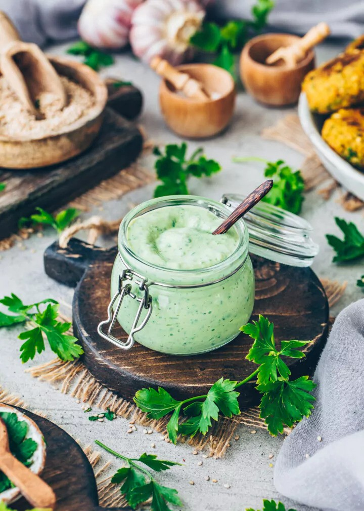

Herb Dip

Serving Size: 2 tablespoons, 12 servings
28 mg sodium per serving
Ingredients:
- 1/2 cup skim milk
- 1/2 block of silken tofu
- 1 cup low fat cottage cheese
- 2 tablespoons chopped parsley
- 2 tablespoons chopped chives
- 1 teaspoon dried basil
- 1 teaspoon curry powder (optional)
- 1 teaspoon paprika
- 1 head garlic, minced
Preparation:
- Puree all ingredients in blender until smooth.
- Serve with crisp raw vegetables.